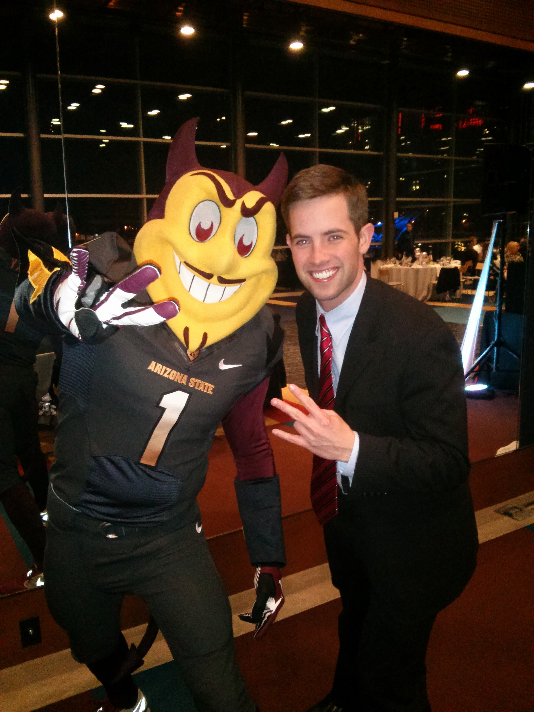

I have been writing about sports since my sophomore year of college, covering men's lacrosse and women's hockey for The Cynic, the University of Vermont's student newspaper.
After transferring to Arizona State University for my junior year in 2007, I was offered an opportunity to be a founding editor for House of Sparky, a brand new ASU sports website on the SB Nation network of blogs.
House of Sparky launched in 2008, and I quickly found himself immersed in the endless potential of sports journalism. Within months, House of Sparky was given media credentials for sporting events by the ASU media relations department, and I took full advantage.
Since 2008, I've covered the Pac-10 Tournament in Los Angeles. I've sat in the press box at the Rose Bowl for an ASU game. I sat on the sidelines during the Sweet 16 and Elite 8 at the University of Phoenix Stadium in Glendale. I covered the 2011 Fiesta Bowl. It has been one hell of a ride.
During my time at House of Sparky, I've also contributed many articles to SB Nation Arizona, a regional site that covered a broader swath of Arizona sports. It was during this time that I was credentialed for Arizona Diamondbacks, Arizona Rattlers and Phoenix Suns events.
Some of my finest work was written for SB Nation Arizona, where there was less emphasis on fan-driven blogging and more interest in delving deep into new territory.
One story was about Cory Hahn, an ASU baseball player who was tragically paralyzed on a slide into second base during his freshman season. I felt at the time that sports media was too focused on professional theatrics and did not focus enough attention on the sorrow facing Hahn.
I also went in-depth with the Diamondbacks in 2011, and discovered why grit actually matters for a team that was breaking in a new manager, Kirk Gibson. As their subsequent playoff appearance proved, grit was a key factor.
You can also find me as a freelance contributor to the Monumental Network, helping you find a good watering hole near Nationals Park or going into great detail about my latest bromance.